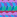

Polypons, one-sided: isohedral number 6
1 shape · each shown with one of its simplest grid-aligned tilings, coloured by orbit · all galleries · family table


10-pon (one-sided) · k = 6 · ≅ 5-rhombille
1 shape · each shown with one of its simplest grid-aligned tilings, coloured by orbit · all galleries · family table
